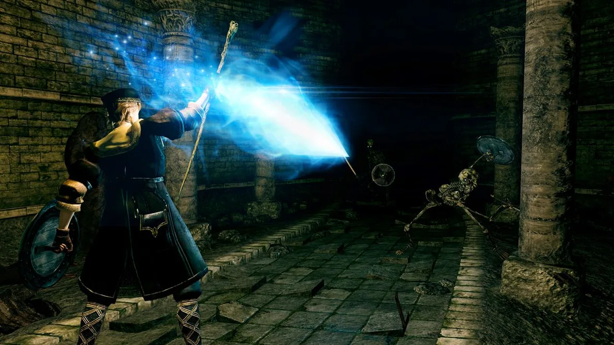

Dark Souls: Remastered - Nota do patch 1.03
Saudações, Morto-vivo Escolhido.
O patch 1.03 para Dark Souls: Remastered será lançado para Playstation 4, Xbox One e Steam/PC em 11 de julho de 2018. Os servidores do jogo ficarão offline durante o lançamento do patch, mas o jogo offline ainda estará disponível durante o processo de aplicação do patch.
Tempos de manutenção do servidor
Todos os horários listados no formato de relógio de 24 horas
Playstation 4
- Tempo Universal Coordenado (UTC): 01:00 - 03:00
- Horário Padrão Japonês (JST): 10:00 - 12:00
- Horário Padrão da Europa Central (CEST): 03:00 - 05:00
- Horário de verão do Pacífico (a manutenção começa em 10 de julho no fuso horário PDT) (PDT): 18:00 - 20:00
Xbox One
- Tempo Universal Coordenado (UTC): 01:00 - 07:00
- Horário Padrão Japonês (JST): 10:00 - 16:00
- Horário Padrão da Europa Central (CEST): 03:00 - 09:00
- Horário de verão do Pacífico (a manutenção começa em 10 de julho no fuso horário PDT) (PDT): 18:00 - 00:00
Vapor/PC
- Tempo Universal Coordenado (UTC): 08:00 - 10:00
- Horário Padrão Japonês (JST): 17:00 - 19:00
- Horário Padrão da Europa Central (CEST): 10:00 - 12:00
- Horário de verão do Pacífico (PDT): 01:00 - 03:00
Notas do Patch
Todas as plataformas
- Corrigido um bug em que The Four Kings não são exibidos corretamente em The Abyss.
- Corrigido um bug em que o final aparecia no Forno da primeira chama sem derrotar o chefe ao fazer movimentos específicos antes da área do chefe.
- Corrigido um bug no qual os dados claros do jogador estavam errados quando o aplicativo era finalizado em condições específicas após derrotar Gwyn, Lord of Cinder.
- Corrigido um bug em que as mensagens não são exibidas para outros jogadores no modo online assíncrono.
- Corrigido um bug no qual a correspondência de sessão para durante o modo online quando o jogador não consegue entrar na sessão onde os jogadores bloqueados estão jogando.
- Corrigido um bug no qual o número de posses Estus Flask não é exibido corretamente quando você retorna pelo Black Separation Crystal.
- Melhorou a segurança contra trapaça durante o modo multijogador online.
Playstation 4
- Corrigido um bug em que o aplicativo não pode ser iniciado.
Playstation 4 e Steam/PC
- Corrigido um bug no qual os jogadores ficavam invisíveis durante o modo multijogador online.
Xbox One
- Corrigido um bug no qual, após os jogadores redefinirem suas estatísticas e criarem um novo perfil, o novo perfil ainda apresentava as estatísticas redefinidas.
Esperamos que essas correções melhorem sua experiência de jogo com Dark Souls: Remastered. Se você tiver perguntas adicionais ou relatórios de bugs, entre em contato com nossa equipe de suporte.
Obrigado por ler esta mensagem.